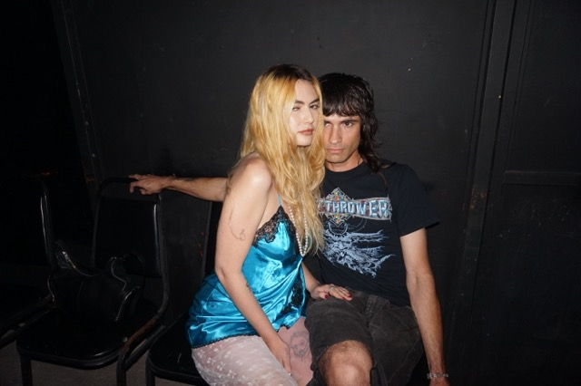
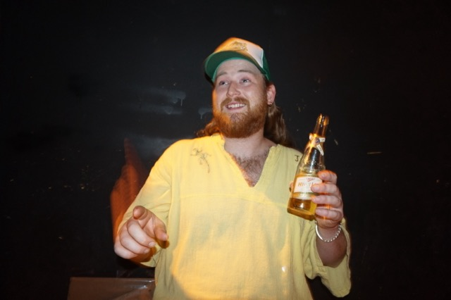
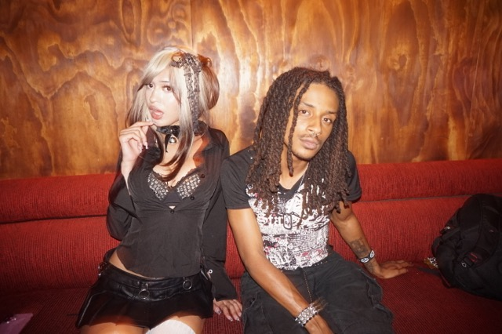
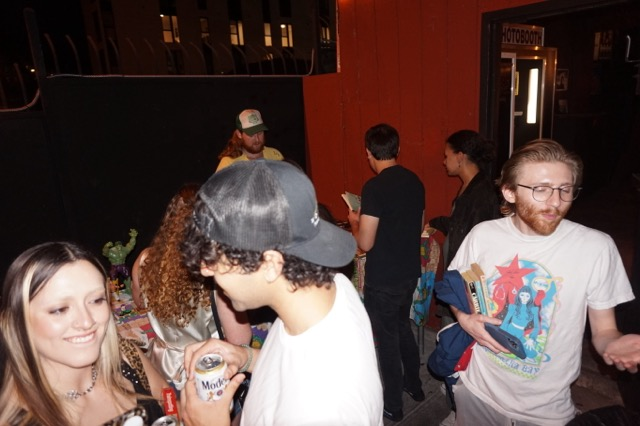
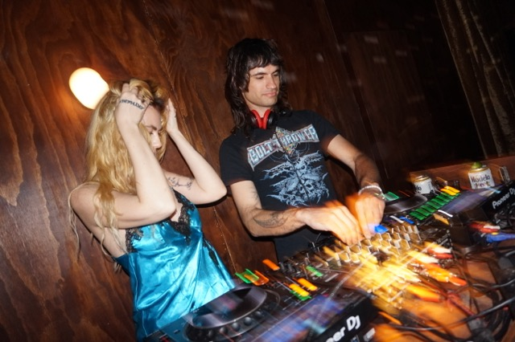
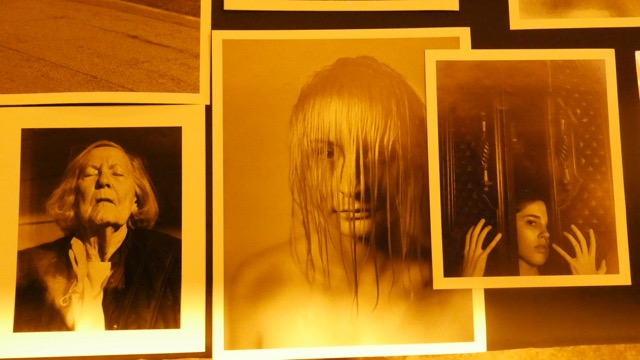
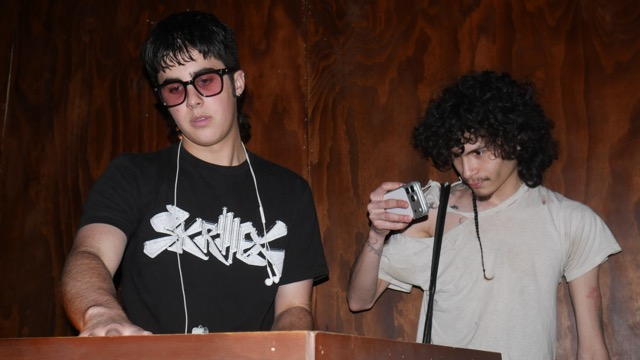

Allergi on Turning “Ice Melts” Into Action
At a small gathering in Los Angeles, Allergi brought their upcoming track Ice Melts into the real world—creating a space built around connection, conversation, and support for families affected by ICE.
Support
If you want to support the work and organizations connected to the night, you can donate below.

What started as a song became something more—an intentional night shaped by music, emotion, and the need to do something tangible.
In a time where so much interaction lives online, the focus of the night was simple: people showing up for each other face to face.
We spoke with Chrome and Alex about how the idea came together, what it means to create community in real life, and why action matters now more than ever.
For people just discovering Allergi, where are you both from and how did you come together creatively?
We met in St. Louis. I was in school getting my PhD (Dropped Out) and working on a fashion show, and I asked Alex to make music for it. That was kind of the first project we did together, in that noise scene that was all based in Miami.
It all happened pretty naturally. We started playing shows in Miami, being around people like Rat Bastard, and building from there. Eventually we moved into DJing more and started doing more accessible shows.

What made you take the idea behind “Ice Melts” and turn it into a real night like this instead of just leaving it as a song?
I write a lot of the vocals, and I think we were just feeling a lot of the weight of what’s going on—seeing things happen in our neighborhoods, to people we love.
When it’s all around you like that, it just comes out. It becomes your way of dealing with it.
The song came to be what it is, but it didn’t feel right to just make a song about it and move on.
So when the song was made, who brought up doing something beyond it?
Once the song came out of me, the momentum was there. I was like—I’m not stopping here. That should be the entry point to action.

With everything feeling overwhelming online right now, do you think spaces like this help people process things in real life, with others?
Getting people physically together makes a world of difference.
I think it needs to happen more and more often. Everyone’s on their phone—no one’s really doing real activism anymore. It becomes just a post.
This isn’t going to change the world overnight, but it creates a space where people can actually talk to each other face to face instead of through a screen.
The world is kind of a crazy place right now. A lot of people feel like, “we’re too far gone,” or “why even try?”
So it’s important to push ourselves to do something—anything—even if it’s small.

From your perspective studying the mind and identity, what do you hope people take away from a night like this?
I think people are really overwhelmed right now.
The hope is that people feel something different here—something beyond a social media post or even a protest. Those are all important, but this is another way to connect emotionally.
Some people connect deeply through music, or visuals, or just being in a space together. If they leave feeling like they can contribute in some way, that’s meaningful.

Do you see this becoming something you continue building—more events like this in the future?
Definitely. I don’t think I can do anything without being connected and trying to be in service to whoever needs me. That’s at the core of what we do.
What pushed you to act on that feeling of people being overwhelmed or hopeless?
Honestly, we were feeling it too.
It was like—why is no one doing anything?
There’s that quote, “be the change you want to see in the world.” It sounds cliché, but it’s real. If something feels missing in your scene, you just have to make it yourself.
At some point it clicked—like, oh… that can be us. We can be the ones doing something.

What would success look like for tonight?
Sparking hope.
We should feel those emotions—anger, frustration—they’re real. But if we can turn that into something more positive, something that motivates people instead of shutting them down, that’s success.

Finding your language to express what you feel—and using it to connect with others—can be the first step toward something bigger.